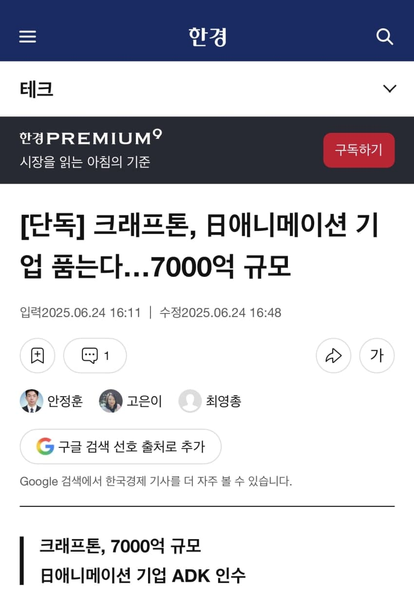
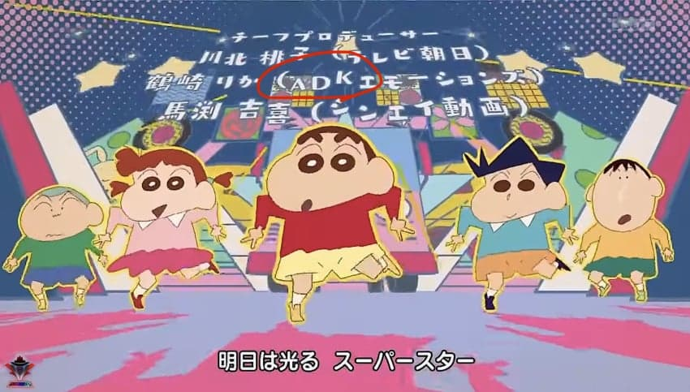
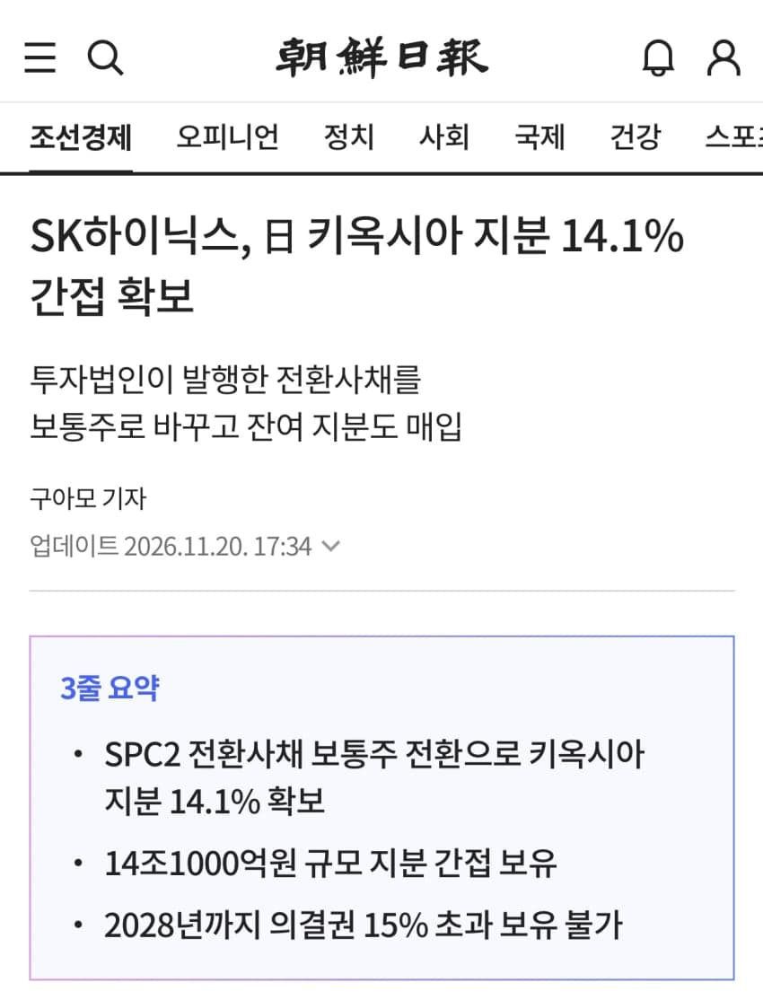
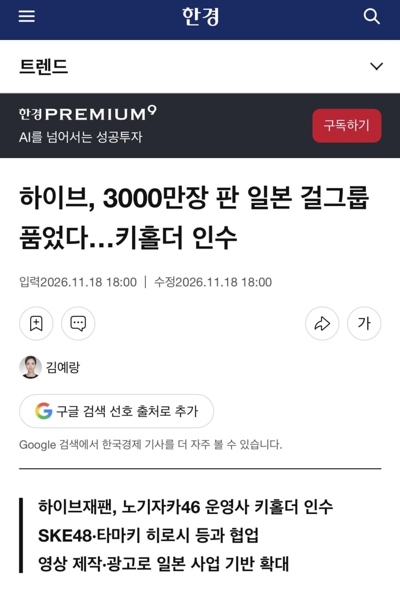
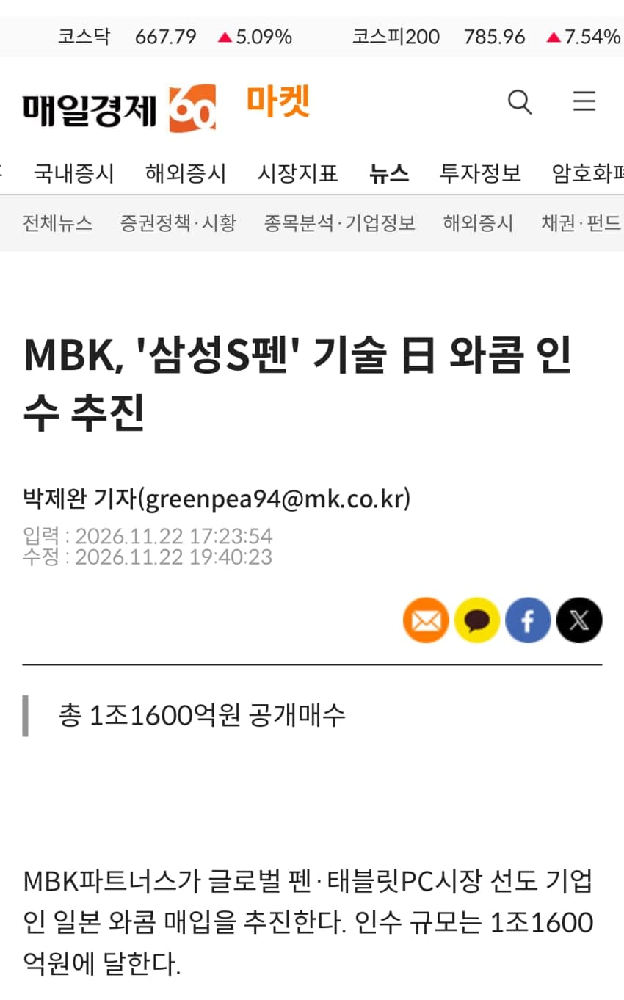
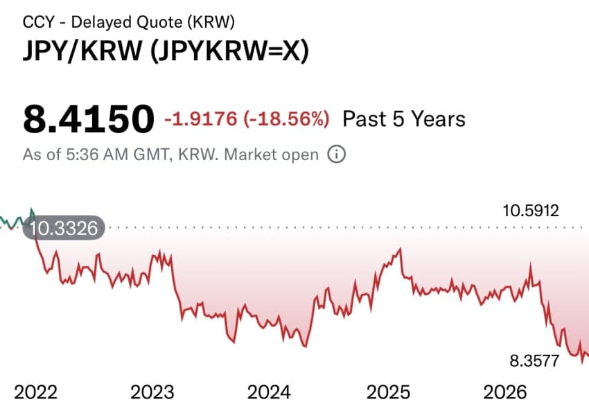

짱구는못말려 등(판권 x) 제작참여 스튜디오 adk 인수

일본 크레용 신짱 오프닝中

일본 메모리 최후의 보루 키옥시아
하이닉스 간접최대주주 등극
(의결권 제한이긴하다)

한국에선 인지도가 적지만 일본에선 국민아이돌인
노기자카 46등 운영사(지분적 영향 제한은 있지만)를
하이브가 인수

얼마전 홈플러스를 갈아버린 mbk의 일러스트 장비계 큰손 와콤 인수 (도쿄 증시 상폐)

최근 엔화 상태는 크게 좋지 않아보인다. 이게 얼마나 갈지는 모르니 싱붕이들은 일본여행 많이 가두자
댓글
수집 당시 댓글 189개
· 아모른직다 · 11.25 15:13:53
ㅇㅇ · 11.24 23:08:50
ㅇㅇ · 11.24 23:10:35
유류유우률류우류류 · 11.24 23:10:46
· ㅇㅇ · 11.24 23:46:44
· ㅇㅇ · 11.24 23:46:59
ㅇㅇ · 11.24 23:10:49
악의꽃 · 11.24 23:13:16
황족 · 11.24 23:16:33
· ㅇㅇ · 11.24 23:24:28
붕붕이 · 11.24 23:16:35
· ㅇㅇ · 11.25 01:37:56
ㅇㅇ · 11.24 23:20:20
ㅇㅇ · 11.24 23:21:04
· ㅇㅇ · 11.25 07:02:04
DEXT · 11.24 23:21:34
· 겐쉰프 · 11.24 23:25:53
· 겐쉰프 · 11.24 23:27:02
· 겐쉰프 · 11.24 23:27:26
· ㅇㅇ · 11.24 23:29:56
· ㅇㅇ · 11.25 07:02:55
ㅇㅇ · 11.24 23:22:07
ㅇㅇ · 11.24 23:22:23
ㅇㅇ · 11.24 23:29:39
· ㅇㅇ · 11.24 23:30:40
· 겐쉰프 · 11.24 23:33:14
· ㅇㅇ · 11.25 00:14:34
안될거뭐있노. · 11.24 23:41:45
· ㅇㅇ · 11.24 23:46:10
· o o · 11.25 17:05:43
ㅇㅇ · 11.24 23:41:46
ㅇㅇ · 11.24 23:42:41
야룽이 · 11.24 23:46:29
ㅇㅇ · 11.24 23:48:24
· ㅇㅇ · 11.25 00:21:30
· ㅇㅇ · 11.25 06:33:16
ㅇㅇ · 11.24 23:50:27
ㅇㅇ · 11.25 00:07:20
· ㅇㅇ · 11.25 00:08:29
ㅇㅇ · 11.25 00:14:54
· ㅇㅇ · 11.25 14:55:49
ㄹㄱㄴ · 11.25 00:22:09
ㅇㅇ · 11.25 00:23:10
· ㅇㅇ · 11.25 00:50:32
· ㅇㅇ · 11.25 01:40:10
· ㅇㅇ · 11.25 01:44:30
· ㅇㅇ · 11.25 01:45:03
· ㅇㅇ · 11.25 01:46:04
· ㅇㅇ · 11.25 01:47:54
· ㅇㅇ · 11.25 02:10:05
· ㅇㅇ · 11.25 05:54:37
· ㅇㅇ · 11.25 06:33:50
· ㅇㅇ · 11.25 10:19:55
히이잉 · 11.25 00:25:18
금발미소녀 · 11.25 00:32:42
· ㅇㅇ · 11.25 07:03:39
ㅇㅇ · 11.25 00:33:32
· ㅇㅇ · 11.25 01:42:32
ㅇㅇ · 11.25 01:09:55
엔저+원저 내선 운명공동체
ㅇㅇ · 11.25 01:22:07
폴렌 · 11.25 01:27:19
ㅇㅇ · 11.25 01:28:54
ㅇㅇ · 11.25 01:36:35
PointMan · 11.25 01:36:54
ㅇㅇ · 11.25 01:38:43
ㅇㅇ · 11.25 01:44:31
ㅇㅇ · 11.25 01:53:11
ㅇㅇ · 11.25 02:09:09
환란 전 교회 휴거 · 11.25 02:09:28
ㅇㅇ · 11.25 02:20:39
2456778 · 11.25 02:28:48
ㅇㅇ · 11.25 02:37:45
ㅇㅇ · 11.25 02:37:51
ㅇㅇ · 11.25 02:41:47
ㅇㅇ · 11.25 03:02:05
ㅇㅇ · 11.25 03:03:21
· ㅇㅇ · 11.25 03:17:29
· ㅇㅇ · 11.25 07:37:28
· ㅇㅇ · 11.25 07:37:50
주소킹 · 11.25 03:26:49
· 주소킹 · 11.25 03:26:55
ㅇㅇ · 11.25 04:03:21
좋은 일본여성 받아들이자
ㅇㅇ · 11.25 04:48:02
· ㅇㅇ · 11.25 05:12:57
ㅇㅇ · 11.25 04:49:25
· ㅇㅇ · 11.25 08:27:59
ㅇㅇ · 11.25 05:13:44
ㅇㅇ · 11.25 06:30:54
ㅇㅇ · 11.25 06:56:04
ㅇㅇ · 11.25 08:51:50
ㅇㅇ · 11.25 09:21:45
무궁화꽃이 · 11.25 09:27:31
ㄴㅁㄴㅁ · 11.25 09:28:09
ㅇㅇ · 11.25 12:06:45
빙륜환 · 11.25 12:17:16
ㅇㅇ · 11.25 12:47:30
ㅇㅇ · 11.25 13:12:53
ㅇㅇ · 11.25 14:55:29
o o · 11.25 17:03:17
ㅇㅇ · 11.25 19:49:58
ㅇㅇ · 11.24 14:41:52
ㅇㅇ · 11.24 14:42:13
· ㅇㅇ · 11.24 14:44:05
· 개댇지 · 11.24 14:44:55
· ㅇㅇ · 11.24 22:51:54
· b.링크/KQuest · 11.24 22:55:16
ㅇㅇ · 11.24 14:42:31
ㅇㅇ · 11.24 14:42:51
ㅇㅇ · 11.24 14:42:51
· ㅇㅇ · 11.24 14:43:45
· 桜坂・亜衣子 · 11.24 14:44:46
· ㅇㅇ · 11.24 23:01:53
· 겐쉰프 · 11.24 23:12:09
· ㅇㅇ · 11.24 23:28:44
ㅇㅇ · 11.24 14:43:18
· ㅇㅇ · 11.24 14:43:58
Randosell · 11.24 14:46:12
· ㅇㅇ · 11.24 15:00:52
· Randosell · 11.24 15:02:28
ㅇㅇ · 11.24 14:46:38
니나혀 · 11.24 14:46:41
주글래 · 11.24 14:51:43
ㅇㅇ · 11.24 14:53:57
ㅇㅇ · 11.24 14:58:12
ㅇㅇ · 11.24 15:01:12
· ㅇㅇ · 11.24 15:05:28
· ㅇㅇ · 11.25 00:54:34
샨테 · 11.24 22:51:09
· 어린이사랑 · 11.24 22:51:43
· 암타황제강시현 · 11.24 22:52:40
· ㅇㅇ · 11.24 22:56:14
어린이사랑 · 11.24 22:51:30
· 샨테 · 11.24 22:52:04
· 암타황제강시현 · 11.24 22:52:47
· ㅇㅇ · 11.24 22:55:54
ㅇㅇ · 11.24 22:51:40
· 겐쉰프 · 11.24 23:09:02
· ㅇㅇ · 11.24 23:09:51
· ㅇㅇ · 11.25 01:05:22
암타황제강시현 · 11.24 22:52:25
· 샨테 · 11.24 22:53:00
· 어린이사랑 · 11.24 22:53:52
· ㅇㅇ · 11.24 22:56:08
ㅇㅇ · 11.24 22:52:33
ㅇㅇ · 11.24 22:52:54
· 元좆본 · 11.24 23:19:29
ㅇㅇ · 11.24 22:53:50
ㅇㅇ · 11.24 22:54:29
· ㅇㅇ · 11.24 22:56:10
· ㅇㅇ · 11.24 22:59:58
ㅇㅇ · 11.24 22:54:46
· ㅇㅇ · 11.25 02:04:58
ㅇㅇ · 11.24 22:55:19
ㅇㅇ · 11.24 22:55:37
ㅇㅇ · 11.24 22:55:49
ㅇㅇ · 11.24 22:56:00
· 샨테 · 11.24 22:56:53
· 암타황제강시현 · 11.24 23:00:44
ㅇㅇ · 11.24 22:56:50
· ㅇㅇ · 11.24 23:02:36
· ㅇㅇ · 11.24 23:07:55
ㅇㅇ · 11.24 22:56:51
· ㅇㅇ · 11.24 23:04:11
· 겐쉰프 · 11.24 23:09:22
· 겐쉰프 · 11.24 23:09:53
· ㅇㅇ · 11.24 23:47:42
· ㅇㅇ · 11.25 00:34:39
ㅇㅇ · 11.24 22:56:52
ㅇㅇ · 11.24 22:59:23
ㅇㅇ · 11.24 22:59:27
· 겐쉰프 · 11.24 23:07:30
· ㅇㅇ · 11.25 01:37:13
· トガ히미코 · 11.25 06:58:50
· ㅇㅇ · 11.25 20:11:58
ㅇㅇ · 11.24 22:59:54
ㅇㅇ · 11.24 23:00:38
ㅇㅇ · 11.24 23:01:12
ㅇㅇ · 11.24 23:02:09
· ㅇㅇ · 11.25 07:05:28
ㅇㅇ · 11.24 23:03:04
835원 ㅋㅋㅋㅋ
히이잉 · 11.24 23:03:27
ㅇㅇ · 11.24 23:04:51
ㅇㅇ · 11.24 23:04:57
ㅇㅇ · 11.24 23:06:12
ㅇㅇ · 11.24 23:06:49
· ㅇㅇ · 11.24 23:09:03
· ㅇㅇ · 11.24 23:12:33
ㅇㅇ · 11.24 23:07:06
존크라운 · 11.24 23:07:52